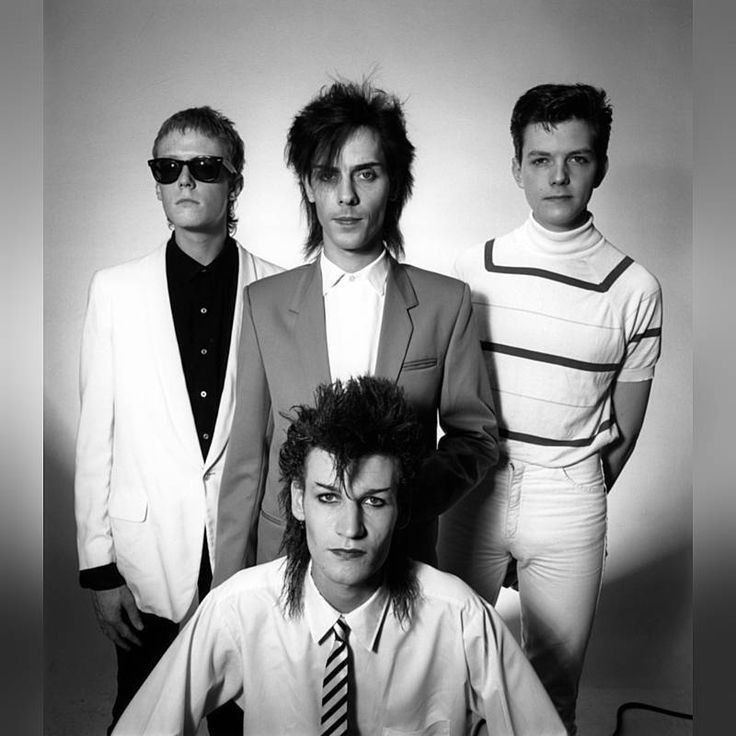

Siouxsie and the Banshees

Joy division
Bauhaus
Ранние представители пост–панка (Siouxsie and the Banshees, Joy Division, Bauhaus) вдохновлялись творчеством таких коллективов как The Doors, T. Rex и The Velvet Underground. Также на жанр оказали существенное влияние рэгги и даб. Первый альбом Siouxsie and the Banshees, The Scream считается одной из самых влиятельных пост–панк–групп: он был процитирован как влияние манчестерской группы Joy Division. Дебютный альбом Public Image Ltd 1978 года, наряду с альбомом Игги Попа The Idiot, вышедшем в 1977 году, считается первым и одним из наиболее влиятельных альбомов постпанка. Альбом, по мнению андеграундных критиков музыкальной индустрии 80–х, имел основные предшествующие жанру черты, такие как медленный машиноподобный ритм, глубокий насыщенный холодными обертонами бас, низкий, будто потусторонний, вокал. Среди других представителей постпанка 70–х следует упомянуть такие экспериментальные коллективы как Devo, Suicide, Television, Talking Heads, Japan.
| Siouxsie and the Banshees |
Joy division |
 Bauhaus |